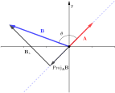
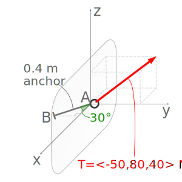

What does it mean when the dot product of two vectors is zero?
How do you use a dot product to find the angle between two vectors?
What does it mean when the scalar component of the projection \(\|\proj_{\vec{A}}\vec{B}\|\) is negative?
Unlike ordinary algebra where there is only one way to multiply numbers, there are two distinct vector multiplication operations. The first is called the dot product or scalar product because the result is a scalar value, and the second is called the cross product or vector product and has a vector result. The dot product will be discussed in this section and the cross product in the next.
For two vectors \(\vec{A}= \langle A_x, A_y, A_z \rangle\) and \(\vec{B} = \langle B_x, B_y, B_z \rangle,\) the dot product multiplication is computed by summing the products of the components.
where \(\theta\) in the equation is the angle between the two vectors and \(| \vec{A} |\) and \(| \vec{B} |\) are the magnitudes of \(\vec{A}\) and \(\vec{B}\text{.}\)
We can conclude from this equation that the dot product of two perpendicular vectors is zero, because \(\cos \ang{90} = 0\text{,}\) and that the dot product of two parallel vectors is the product of their magnitudes.
When dotting unit vectors that have a magnitude of one, the dot products of a unit vector with itself is one and the dot product two perpendicular unit vectors is zero, so for \(\ihat\text{,}\)\(\jhat\text{,}\) and \(\khat\) we have
Associative. It does not matter whether you multiply a scalar value \(C\) by the final dot product, or either of the individual vectors, you will still get the same answer.
Distributive. If you are dotting one vector \(\vec{A}\) with the sum of two more \((\vec{B}+\vec{C})\text{,}\) you can either add \(\vec{B}+\vec{C}\) first, or dot \(\vec{A}\) by both and add the final value.
Dot products are a particularly useful tool to compute the magnitude of a vector, determine the angle between two vectors, or find the rectangular component or projection of a vector in a specified direction. These applications will be discussed in the following sections.
Subsection2.7.1Magnitude of a Vector
Dot products can be used to find vector magnitudes. When a vector is dotted with itself using (2.7.1), the result is the square of the magnitude of the vector. By the Pythagorean theorem
The dot product is used to find the projection of one vector onto another. You can think of a projection of \(\vec{B}\) on \(\vec{A}\) as a vector the length of the shadow of \(\vec{B}\) on the line of action of \(\vec{A}\) when the sun is directly above \(\vec{A}\text{.}\) More precisely, the projection of \(\vec{B}\) onto \(\vec{A}\) produces the rectangular component of \(\vec{B}\) in the direction parallel to \(\vec{A}\text{.}\) This is one side of a rectangle aligned with \(\vec{A}\text{,}\) having \(\vec{B}\) as its diagonal.
This is illustrated in Figure 2.7.4, where \(\vec{u}\) is the projection of \(\vec{B}\) onto \(\vec{A}\text{,}\) or alternately \(\vec{u}\) is the rectangular component of \(\vec{B}\) in the direction of \(\vec{A}\text{.}\)
In this text we will use the symbols
\(\proj_{\vec{A}}\vec{B}\) to mean the vector projection of \(\vec{B}\) on \(\vec{A}\)
\(|\proj_{\vec{A}}\vec{B}|\) to mean the magnitude of the projection, a positive or zero-valued scalar value, and
\(\|\proj_{\vec{A}}\vec{B}\|\) to mean the scalar component of the projection, also known as the scalar projection, which can have a positive, zero, or negative scalar value.
As we have mentioned before, the magnitude of a vector is its length and is always positive or zero, while a scalar component is a signed value that can be positive or negative. When a scalar component is multiplied by a unit vector the result is a vector in that direction when the scalar component is positive, or \(\ang{180}\) opposite when the scalar component is negative.
This interactive demonstrates the relationship between vectors \(\vec{A}\) and \(\vec{B}\) and the projection of \(\vec{B}\) onto \(\vec{A}\text{.}\) The checkbox switches between showing \(\proj_\vec{A}\vec{B}\) and \(\proj_\vec{B}\vec{A}\text{.}\)
Figure2.7.4.Vector projection in two dimensions.
The interactive shows that the projection is the adjacent side of a right triangle with \(\vec{B}\) as the hypotenuse. From the definition of the dot product (2.7.2) we find that
where \(B\ \cos \theta\) is the scalar component of the projection. So, the dot product of \(\vec{A}\) and \(\vec{B}\) gives us the projection of \(\vec{B}\) onto \(\vec{A}\) times the magnitude of \(\vec{A}\text{.}\) This value will be positive when \(\theta < \ang{90}\text{,}\) negative when \(\theta > \ang{90}\text{,}\) and zero when the vectors are perpendicular because of the properties of the cosine function.
So, to find the scalar value of the projection of \(\vec{B}\) onto \(\vec{A}\) we divide by the magnitude of \(\vec{A}\text{.}\)
The final simplified form is written in terms of the unit vector in the direction vector \(\hat{\vec{A}}=\dfrac{\vec{A}}{A}\text{.}\)
If you want the vector projection of \(\vec{B}\) onto \(\vec{A}\text{,}\) as opposed to the scalar projection we just found, multiply the scalar projection by the unit vector \(\hat{\vec{A}}\text{.}\)
Rearranging the vectors to find the vector projection of \(\vec{A}\) onto \(\vec{B}\text{,}\) we dot the vector \(\vec{A}\) onto the unit vector \(\hat{B}\) and then multiply by \(\hat{B}\text{.}\)
This interactive shows the vector projection of \(\vec{A}\) on \(\vec{B}\) or of \(\vec{B}\) on \(\vec{A}\text{.}\)
You may change \(\vec{A}\) and \(\vec{B}\) by moving the red dots or entering values into the table cells. Click dot to switch between \(x\)-\(y\) mode and \(z\) mode. The components of \(\vec{A}\) and \(\vec{B}\) can also be entered into the table.
Figure2.7.5.Vector projections in three dimensions.
Subsection2.7.4Perpendicular Components
The final application of dot products is to find the component of one vector perpendicular to another.
To find the component of \(\vec{B}\) perpendicular to \(\vec{A}\text{,}\) first find the vector projection of \(\vec{B}\) on \(\vec{A}\text{,}\) then subtract that from \(\vec{B}\text{.}\) What remains is the perpendicular component.
Figure2.7.6.Perpendicular and parallel components of \(\vec{B}\text{.}\)
Example2.7.7.Dot Products.

A cable pulls with tension \(\vec{T}=\N{\langle -50, 80, 40 \rangle}\) on a \(\m{0.4}\) long anchor \(AB\text{.}\) The anchor is embedded in a concrete wall which is in the \(xz\) plane. The anchor lies in the \(xy\) plane at an angle \(\ang{30}\) off the \(x\) axis.
This is a multi-part problem that covers the full range of values you might be asked to compute using a dot product at this point in Statics. It will help you see how each computation is related to the others.
For the system above, compute the following:
(a)
Find the dot product of the cable tension \(\vec{T}\) and the anchor \(\vec{AB}\)
If you are given the vector magnitudes and angle between them, it is typically easiest to use the dot product equation \(\vec{A} \cdot \vec{B} = A B \cos \theta\text{.}\) But in this case, we were given the components of the two vectors, so we’ll use \(\vec{A} \cdot \vec{B} = A_x B_x + A_y B_y + A_z B_z\text{.}\)
The units of the result [N-m] are the product of the units of the vectors in the dot product. If you compute the dot product of two position vectors, the units will be length squared, or the dot product of two force vectors will be force squared.
(b)
Find the angle \(\theta\) between the cable tension \(\vec{T}\) and the anchor \(\vec{AB}\text{.}\)
As \(\vec{A} \cdot \vec{B} = A B \cos \theta = A_x B_x + A_y B_y + A_z B_z\) we can rearrange the terms equation to solve for the angle between the cable tension and \(\vec{T}\) and the anchor \(\vec{AB}\text{.}\) Given that we already found \(\vec{T} \cdot \vec{AB}\) in part (a), we’ll use that value for this computation.
Note that \(\theta \gt \ang{90}\) correctly corresponds to the negative dot product result from part (a), both indicating that the two vectors generally oppose each other.
(c)
Find the scalar projection of the the cable tension \(\vec{T}\) onto the anchor \(\vec{AB}\text{.}\)
Recall that the scalar projection represents the scalar magnitude of the force that is directed along the anchor. This is one of the most direct and practical applications of the dot product, to find out how much of one vector is parallel to another.
Alternative 1: Notice that we are asked to find the magnitude of the tension force that is along (or parallel to) the anchor. If we were to simply dot the tension force \(\vec{T}\) onto the anchor \(\vec{AB}\) we would end up with the product of the tension force \(\vec{T}\) parallel to the anchor \(\vec{AB}\)times the anchor’s length. Hence, we have to divide by the anchor’s length to end up with just a \(N\) unit force.
Alternative 2: You can also dot the force vector \(\vec{T}\) with the unit vector of \(AB\text{,}\)\(\widehat{\vec{AB}}\text{,}\) eliminating the need to divide by the length of AB.
Thus, \(\N{83.3}\) of the \(T=\N{102.47}\) tension force is directed opposite the anchor AB.
As previously discussed in Subsection 2.5.1, recognize that \(\vec{AB}\) is a two-dimensional vector with its direction defined by the angle \(\ang{30}\text{,}\) thus the unit vector \(\widehat{\vec{AB}}\) is also equal to
The vector projection is simply the scalar projection value multiplied by a direction to turn it into vector components. So we multiply the scalar projection with the unit vector of \(AB\) to compute the vector projection of \(T\) onto \(AB\text{.}\)
Recall that a two-dimensional vector can be represented by the sum of two perpendicular components. In the same way, a right triangle can be represented by a vector along the hypotenuse equal to the sum of the two right-triangle sides.
Thus, any vector can be divided into two vectors parallel and perpendicular to another line. The vector projection \(proj_{\vec{AB}}\vec{T}\text{,}\) from Part (d), is the portion of \(\vec{T}\) parallel to \(\vec{AB}\text{.}\) So the sum of \(\vec{T}\) can be expressed as the parallel and perpendicular terms: